관점을 세우기도 전에
다음 모델이 도착한다
대화의 배경에는 반복되는 출시와 낮아지는 비용이 있다. 그러나 출연자들이 전하는 압박은 숫자보다 리듬에 가깝다. 새 도구의 의미를 이해하기 전에, 다음 도구가 등장한다.
영상에서는 GPT-6 Sol, Xiaomi MiMo, Claude Opus 5.5가 공개된 한 주를 돌아본다. 최승준은 Opus 5.5와 GPT-6 Sol이 같은 날 약 두 시간 차이로 나왔다고 말하며, 프론티어 모델의 변화를 대략 70일 주기, 체감상 “일주일에 10% 향상”으로 표현한다. 이는 개별 출시 간격이나 정량 성능의 법칙을 입증하는 수치가 아니라, 그가 느끼는 변화의 속도다.
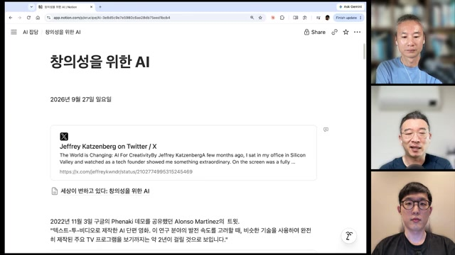
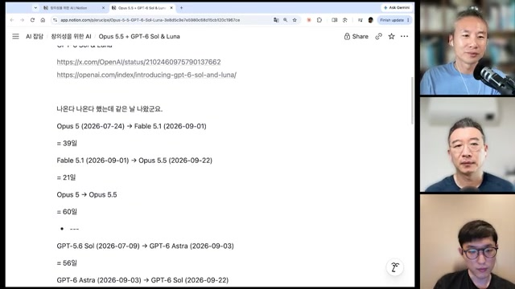
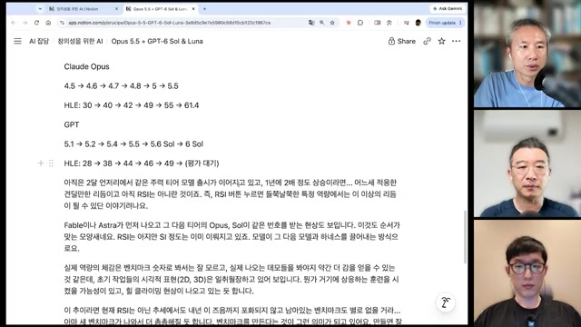
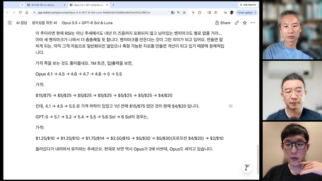
| 모델 | 입력 | 출력 | 대화에서의 의미 |
|---|---|---|---|
| Opus 4.1 | $15 | $75 | 가격 하락을 비교하는 출발점 |
| Opus 4.5~5 | $5 | $25 | 중간 세대에서 유지된 가격 |
| Opus 5.5 | $4 | $20 | 4.1 가격의 약 27% 수준 |
| GPT-6 Sol | $2 | $10 | 화면상 Opus 5.5의 절반 |
최승준은 벤치마크의 교체 속도를 강화학습 환경이 촘촘해지는 흐름과 연결한다. 다만 이를 재귀적 자기개선, 즉 RSI가 이미 실현됐다는 증거로 보지는 않는다. 노정석은 모델 성능이 상향 평준화된 뒤에는 추론 강도와 문맥 길이에 맞춰 컴퓨팅 자원을 배치하는 운영 능력이 중요해질 것이라고 전망한다.
낮은 추론 강도로 충분한 작업에서는 비용이 줄 수 있다. 반대로 더 높은 충실도를 추구하며 긴 생성과 반복을 허용하면 총비용은 커질 수 있다. 뒤에 등장하는 $252 창작 사례가 이 차이를 보여준다.
서툰 결과물에서도
개선의 방향은 보인다
“창의성을 위한 AI”라는 화두는 기술 낙관론만으로 시작되지 않는다. 영상에서 소개된 Jeffrey Katzenberg의 글은 녹음과 유성영화의 등장으로 사라진 일자리를 언급하면서도, 그 변화가 새로운 예술 형식을 열었다고 설명한다. 최승준은 기술 전환기에 저항했던 사람들이 이후 권리 보장에 기여했다는 대목을 함께 읽는다.
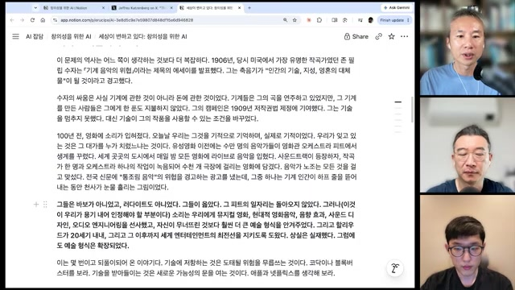
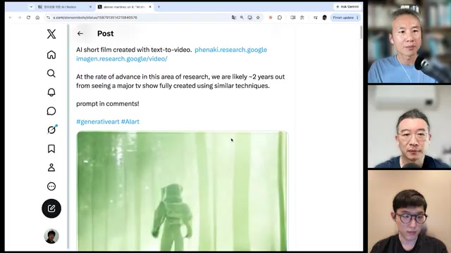
“AI 분야에서 귀여워 보이는 건 문제다.”
최승준 · 12:24 장면 관련 발언, 제공된 노트의 인용
여기서 “귀엽다”는 평가는 아직 어설프다는 뜻이다. 최승준은 그 어설픔 속에서도 신호가 있다면 결과를 평가하고 반복해서 개선하는 hill climbing이 가능하다고 본다. 지금의 완성도와 앞으로 개선할 수 있는 여지를 함께 보자는 관점이다.
박종현은 영상의 품질과 영상이 소비되는 이유도 구분한다. AI가 정보를 전달하는 수단으로 쓰이는 것과, 생성된 작품 자체가 보고 싶은 대상이 되는 것은 다른 문제라는 것이다. 그가 언급한 플랫폼의 채널 차단 사례 역시 영상 속 설명으로, 이 글에서 정책이나 개별 조치를 확인한 것은 아니다.
픽셀을 넘어,
장면의 작동 방식을 만든다
이번 데모 모음에서 코드가 맡는 역할은 넓다. 화면을 그리고 소리를 만들며, 관객이 개입할 수 있는 규칙까지 구성한다.
최승준은 Astra 출시 당시 3D·그래픽·게임·사운드 데모 약 100개를 모았고, 이번에는 Opus 5.5의 결과물을 이어서 살폈다고 설명한다. Kevin Ngo의 애니메이션에서 박종현이 특히 주목한 것은 음악의 박자에 맞춰 떨어지는 꽃이다. 영상과 음악을 모두 코드로 생성하면 동기화도 같은 시간 구조 안에서 다룰 수 있다는 관찰이다.
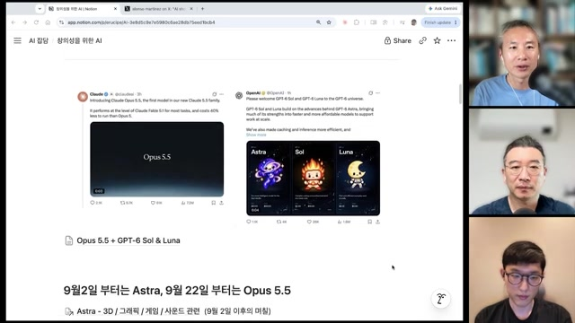
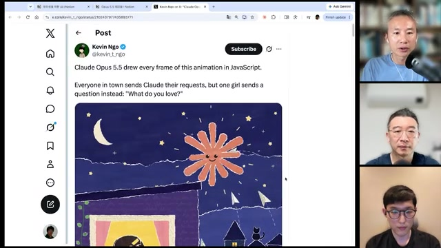
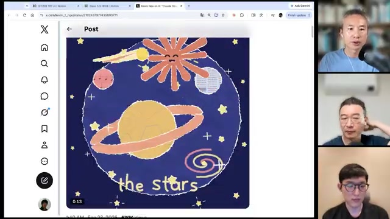
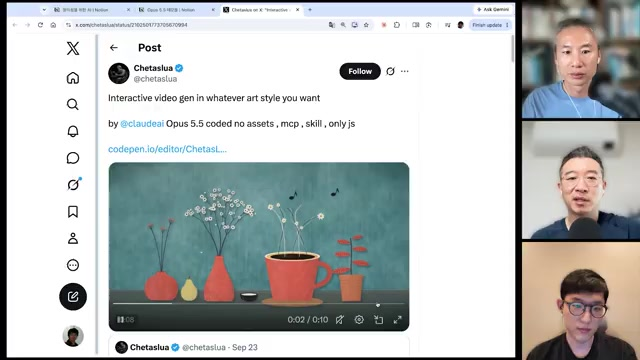
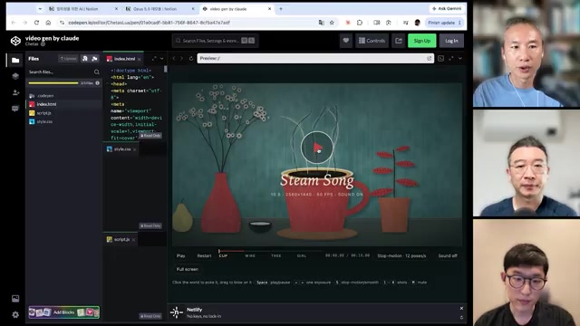
화풍을 코드의 규칙으로 옮긴다는 것
Jake Eaton의 사례는 다른 방향을 보여준다. 게시물은 표준 라이브러리와 약 7,500줄의 Python 코드로 붓질을 재현했으며, 참고 이미지를 직접 사용하지 않았다고 설명한다. 최승준이 읽어낸 핵심은 회화에 관한 지식을 수학적 질감으로 옮겼다는 점이다. 노정석은 이를 화풍과 심상을 라이브러리로 만든 것에 비유한다.
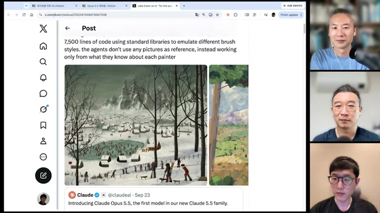
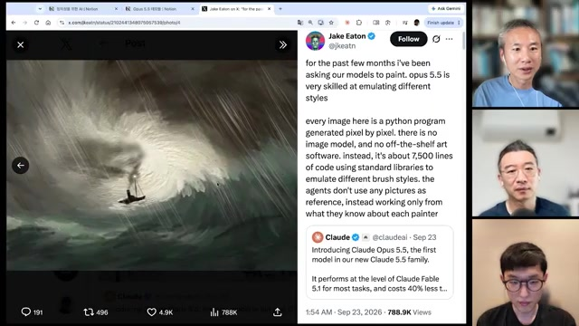
이 모음 전체가 외부 자산을 쓰지 않은 것은 아니다. 뒤의 보스전은 fal 에셋을 사용했다고 명시되어 있고, 모션 그래픽에는 TTF 폰트 로드가 언급된다. 코드 중심 생성이라는 공통 흐름과 개별 작품의 제작 조건을 구분해야 한다.
게임의 컷신에서
음악의 기승전결까지
게임 데모에서 출연자들이 놀라는 지점은 시각적 완성도만이 아니다. 최승준의 마법사 실험은 픽셀에서 복셀로, 다시 리깅된 형태로 바뀐다. 박종현은 그 과정에서 요청하지 않은 컷신과 카메라 각도 변화가 적절한 타이밍에 추가됐다는 점을 짚는다. 모델이 장르에 어울리는 연출을 기본 선택으로 취급한 듯 보였다는 것이다.
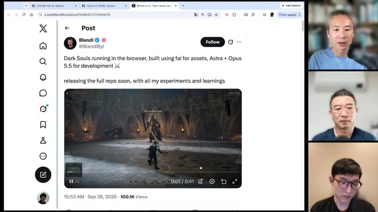
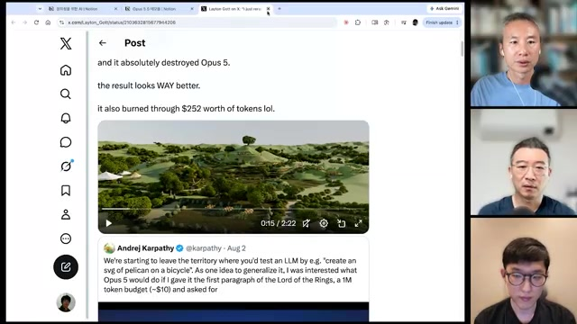
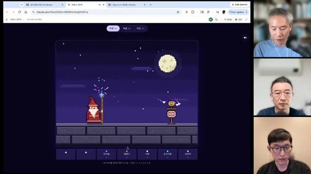
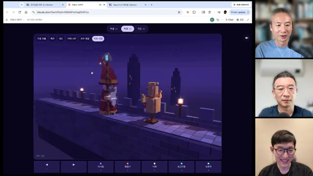
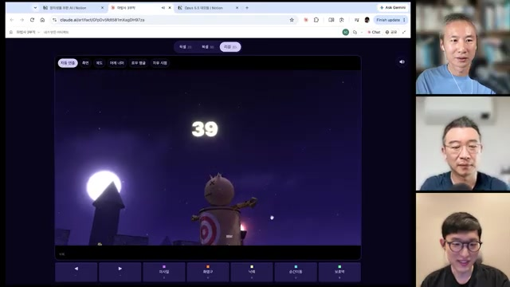
대화에서 시작한 두 시간짜리 모험
「이끼골 모험기」는 최승준이 아이와 이야기하며 하루 만에 만들었다고 소개한 JRPG다. 첫 프롬프트 작성에 약 10분, 마을과 인접 맵을 갖춘 개념 검증용 버전에 약 20분이 걸렸다고 한다. 이후 서사·반전·보스를 더해 엔딩까지 약 두 시간의 플레이 분량으로 확장했다.
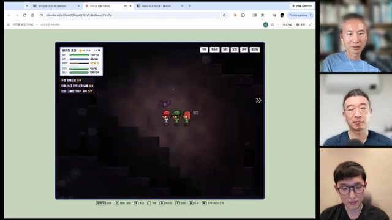
들리지 않는 소리를 어떻게 설계했을까
음악 실험에서는 PCM을 코드로 직접 합성하고, 포먼트 기반 음성 합성으로 민요의 메기고 받기나 돌림노래 같은 구조를 만들었다고 설명한다. 최승준이 제시한 단서는 Iannis Xenakis의 그래픽 악보였다. 그는 모델이 중간의 멈춤과 클라이맥스까지 구성한 점에서 음악에 대한 내부 표현의 가능성을 읽는다.
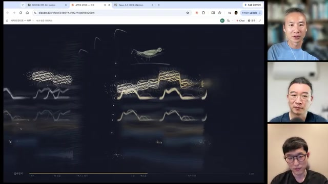
동일한 시간 기준으로 설계할 수 있다는 장점이 모든 생성 결과의 정확한 동기화를 보장하지는 않는다.
같은 프롬프트, 다른 제작 경로
15초 힙합 모션 그래픽 실험에서는 짧은 요청만으로 텍스트 효과와 장면 전환이 만들어졌다. 최승준이 살펴본 한 버전은 바닐라 JavaScript와 Web Audio를 사용했고, 다른 버전은 Python의 cairo·numpy로 프레임을 만든 뒤 ffmpeg로 인코딩했다.
Make a dynamic 15-second motion graphics video that shows what an incredible motion designer you are. Go all out. Theme: HipHop
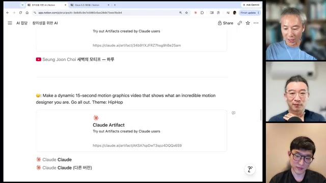
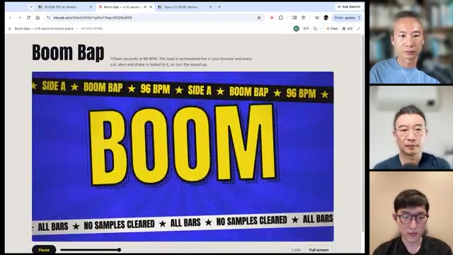
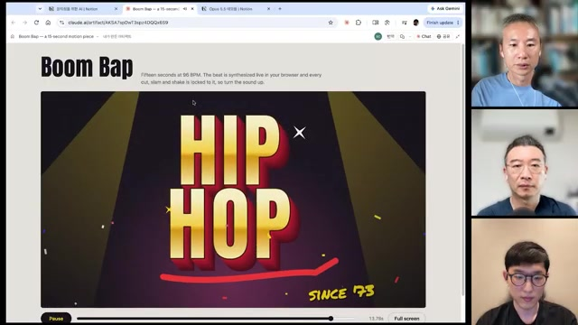
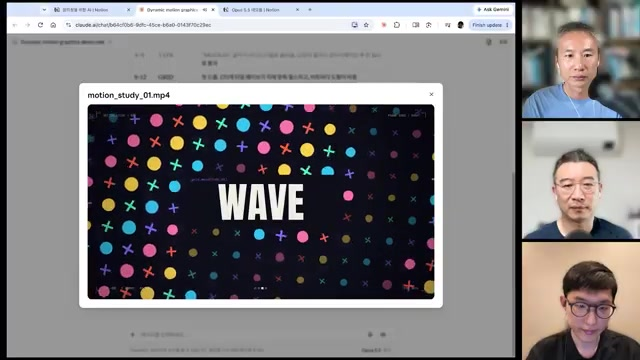
작품의 문법은 보인다.
학습의 경로는 아직 가설이다
박종현의 질문은 강화학습의 보상으로 향한다. 수학 문제처럼 정답을 확인할 수 있는 과제와 달리, 음악이나 모션 그래픽의 좋고 나쁨은 무엇으로 평가했을까. 최승준은 대리 지표, 전문가의 작업 궤적, 보상 모델을 조합해 단계적으로 개선했을 가능성을 제시한다. 사전학습의 기여도 함께 필요했을 것이라는 추측이다.
노정석은 코딩이라는 전문성이 예술로 이어지며 새로운 영역을 여는 경로를 상상한다. 최승준은 수학에서 탐색 공간을 줄이는 가정인 Ansatz에 빗대어, 창작에서도 “어디로 가지 말아야 하는가”를 아는 휴리스틱이 생겨나는 것 같다고 말한다.
| 구분 | 영상이 제시하는 내용 | 해석의 경계 |
|---|---|---|
| 관찰·시연 | 코드로 생성한 회화, 게임, 애니메이션, 음악이 소개된다. | 선별된 사례다. 평균 성공률이나 재현성을 보여주지는 않는다. |
| 출연자 평가 | 박자, 장면 전환, 기승전결이 자연스러워졌다고 평가한다. | 통제된 비교나 독립적인 품질 평가가 아니다. |
| 학습 가설 | 대리 지표·전문가 궤적·보상 모델을 통한 개선을 추정한다. | 실제 학습 데이터와 보상 설계는 확인되지 않았다. |
| 일반화 가설 | 코딩 능력이 예술과 로봇 제어로 확장될 수 있다고 본다. | 시연의 성공만으로 안정성이나 범용성을 결론 내릴 수 없다. |
대화는 로봇으로도 이어진다. 박종현은 Astra가 제어 코드를 생성하는 방식으로 로봇을 움직인 사례를 언급하며, 연속 동작을 생성하는 VLA·diffusion 계열과 다른 경로에 주목한다. 동시에 실패 없이 잘하는 수준은 아니라고 선을 긋는다. Gemini Robotics 2의 로봇 데이터 학습도 언급되지만, 모두 이 영상의 소개 범위에 머문다.
데모는 코드가 시각·음향·동작을 연결하는 공통 표현 수단이 될 가능성을 보여준다. 이를 곧바로 인간과 같은 창의성이나 특정 학습 방식의 증명으로 읽기보다, 어떤 구성 능력이 나타났고 어디서 실패하는지를 묻는 편이 생산적이다.
코더, 아티스트, 메이커.
달라지는 이름이 남기는 질문
대화의 후반부는 창작자의 자기소개로 이동한다. 화면에 정리된 번역에 따르면 Kyle McDonald는 오랫동안 쓰던 ‘코드로 작업하는 아티스트’라는 소개를 ‘아티스트’로 바꿨다고 한다. Zach Lieberman은 코딩 자체보다 계산과 소프트웨어가 가능하게 하는 연결이 중요했다고 응답한다.
Alexander Chen은 숫자와 패턴, 복잡계에 대한 탐구가 여전히 즐겁다고 말하고, Celeste Betancur는 그 사이를 오가는 감정을 진자에 비유한다. 동일한 기술 변화가 누군가에게는 정체성의 상실로, 다른 누군가에게는 탐구의 확장으로 다가오는 셈이다.
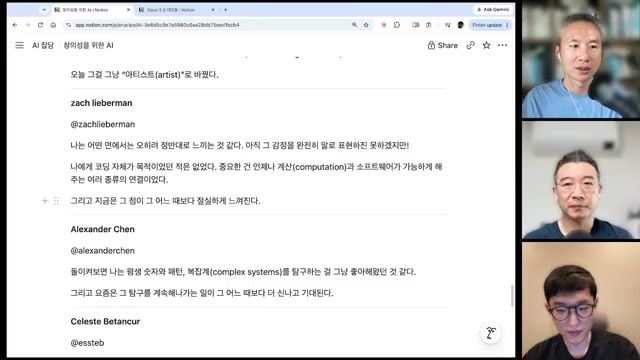
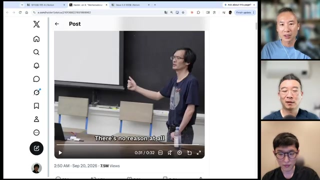
빨리 만드는 능력과 계속 고치는 능력
DHH의 “메이커” 관점과 Mario Zechner가 공유한 비판은 생산 과정의 서로 다른 순간을 비춘다. 하나는 원하는 결과에 도달하는 능력을, 다른 하나는 만들어진 시스템을 이해하고 유지하는 능력을 강조한다. 최승준은 양쪽 모두에 진실이 있다고 본다.
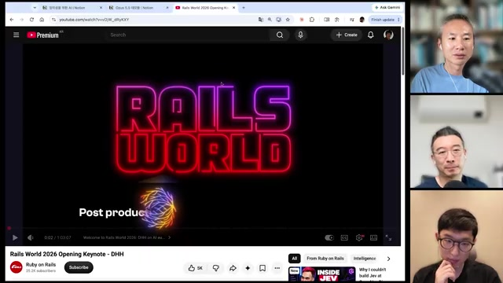
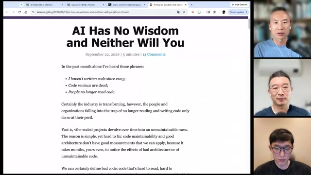
시행착오로 만드는 법을 익힌다
노정석은 지금 단계에서는 직접 요청하고 반복하며 새로운 제작 방식을 체화하는 편에 무게를 둔다. 다음 세대는 코드를 모른 채 결과물에 도달할 수도 있다고 본다.
시간이 지난 뒤에도 통제할 수 있어야 한다
비판 측은 유지보수성과 좋은 구조를 평가하기 어렵다는 점을 지적한다. 최초 데모의 성공과 장기 운영의 품질은 별도로 살펴야 한다.
교육에서 먼저 채워야 할 세 가지
최승준은 토스의 디자인 학교에서 진행한 4주 수업 경험을 바탕으로 세 가지를 제안한다. 첫째는 가능성의 상한을 보여주는 것, 둘째는 너무 일찍 시도를 멈추지 않는 것, 셋째는 요청에 필요한 개념어를 알려주는 것이다.
Three.js, MediaPipe, PCM이라는 말을 모르면 관련 능력을 요청하기도 어렵다. 전문가가 갖고 있는 장점은 구현 기술만이 아니다. 적절한 개념, 창작자, 역사적 사례를 떠올리고 그것을 작업의 단서로 제공할 수 있다는 점도 포함된다.
무엇이든 만들 수 있다면,
박종현이 제기한 질문을 바탕으로 한 편집 요약
사람들은 무엇을 왜 보게 될까.
박종현은 팟캐스트 자체를 예로 든다. 시청자가 정보만을 원한다면 AI가 만든 콘텐츠로 이동할 수 있지만, 특정 인물들이 궁금하다면 원본을 찾을 수 있다. 노정석은 인간끼리 겨루는 스포츠의 매력에서 비슷한 실마리를 찾는다. 더 빠른 기계가 있어도 사람은 인간의 경쟁과 서사에 몰입한다.
최승준은 프로 피아니스트의 연주에 담긴 인간의 정념을 떠올린다. 동시에 시뮬레이션된 정념과 실제 경험을 구분할 수 없게 되었을 때도 같은 판단을 할지는 열어둔다. 인간의 몫에 관한 대화는 확정된 답보다, 앞으로의 경험으로 확인해야 할 질문으로 남는다.
산업은 넓어지고,
개인은 작은 실험으로 배운다
대화가 산업으로 확장되면 표현도 바뀐다. 출연자들은 OpenAI와 Anthropic을 “프론티어 랩”보다 “프론티어 컴퍼니”로 바라본다. 도구 호출·메모리·오피스 기능 같은 횡적 확장에 이어, 법무·재무·생명공학·과학 등 개별 산업으로 들어가는 흐름을 예상하기 때문이다.
Anthropic의 wet lab과 CRISPR 관련 성과에 대한 언급도 이 맥락에 놓인다. 구체적 성과와 학계 반응은 이 노트에서 검증되지 않았다. 출연자들이 강조하는 것은 초기 신호에 자본이 투입되고 개선이 누적될 때 생길 변화, 그리고 그 과정에서 집중될 수 있는 권력이다.
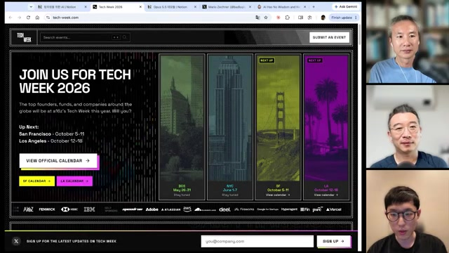
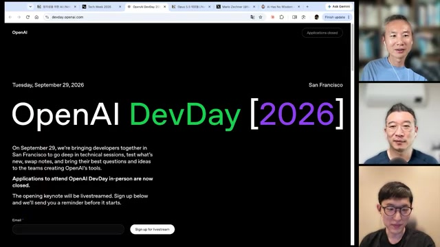
영상 말미에는 Tesla의 10월 1일 발표에 대한 소문과 샌프란시스코의 Waymo·Zoox 무인차 풍경도 언급된다. 이 일정과 예측은 녹화 당시의 전망이다. 실제 발표 결과나 제품의 현재 상태를 설명하는 정보로 읽어서는 안 된다.
연구와 팀 운영에 옮겨볼 질문
이 사례 모음에서 얻을 수 있는 실용적 시사점은 “모든 작업을 맡기자”라는 단일 처방보다 구체적이다. 무엇이 가능한지 보여주고, 요청에 필요한 언어를 익히며, 결과물의 성격에 맞게 검증해야 한다.
- 가능성: 팀원들이 현재 도구로 만들 수 있는 결과물의 범위를 실제 사례로 보았는가?
- 개념어: 막힌 이유가 모델의 한계인지, 필요한 기법을 요청할 언어의 부재인지 구분했는가?
- 비용: 토큰 단가와 별도로 한 작업에 허용할 반복 횟수·시간·총예산을 정했는가?
- 검증: 시연의 인상과 실제 성공률, 수정 가능성, 장기 유지보수를 나눠 확인했는가?
- 연구: 로봇 제어 같은 확장 사례에서 성공 장면뿐 아니라 실패 조건과 재현성을 기록했는가?
- 의도: 무엇을 만들 수 있는지에 더해, 누구에게 어떤 이유로 필요한지 설명할 수 있는가?
다음 작품은,
다음 질문을 알아내는 방법이다.
최승준은 마지막에 epistemic action이라는 개념을 꺼낸다. 테트리스 블록을 머릿속으로만 판단하기보다 직접 돌려보면 맞는 자리를 알 수 있듯, 행동 자체가 이해를 돕는다는 뜻이다.
이번 대화에서 가져갈 태도도 여기에 가깝다. 만들고 싶은 작은 장면 하나를 정하고, 만들어본 뒤 무엇이 좋았고 무엇을 이해하지 못했는지 묻는 것. 창작의 문턱이 낮아질수록, 그 경험을 다음 선택으로 연결하는 일이 중요해진다.
이 글은 무엇을 근거로 썼는가
이 글은 제공된 Obsidian 연구 노트를 공개 기사 형식으로 재구성한 영상 기반 해설이다. 새로운 실험이나 독립적인 팩트체크를 수행한 연구 결과는 아니다. 본문의 프레임 설명과 인용은 해당 노트가 기록한 자막·화면·메타데이터를 따른다.
인용과 사실 판단의 경계
- 1. 모델 정보와 외부 사건
- Opus 5.5, Fable 5.1, GPT-6 Sol·Astra·Luna, Gemini Robotics 2의 명칭과 출시·가격·성능, wet lab의 CRISPR 관련 발표, 밀레니엄 문제 해결 등은 영상의 발언 또는 화면 기록이다. 이 글은 이를 독립적으로 확인된 사실로 제시하지 않는다.
- 2. 번역을 거친 외부 발언
- Katzenberg, Kyle McDonald, Zach Lieberman 등의 글은 최승준이 정리한 Notion 번역을 거쳐 소개되었다. 원문 표현이나 전체 맥락과 차이가 있을 수 있다. DHH·Tao 관련 서술도 영상 속 소개의 범위에 한정한다.
- 3. 제작 과정과 학습 방법
- 에셋 사용 여부·코드 분량·작업 시간·토큰 비용은 제작자 게시물과 출연자 설명에 따른다. 원본 코드의 전체 감사는 수행하지 않았다. 대리 지표·전문가 궤적·보상 모델에 관한 설명은 출연자들도 추측으로 제시했다.
- 4. 선정된 데모의 한계
- 흥미로운 성공 사례를 모은 영상이므로 모델의 평균 능력이나 실패 빈도를 대표하지 않는다. 정지 프레임은 움직임·소리·상호작용의 품질을 직접 입증하지 못한다.
프레임은 360p로 확보되었다
제공된 노트에 따르면 한국어 수동 자막은 정상 확보했지만, 영상은 640×360 해상도로만 내려받았다. 큰 본문은 읽을 수 있어도 작은 UI 글자·조회수·재생 컨트롤은 판독이 어려울 수 있다. 이 글은 추출된 이미지 31장을 모두 보존했다.
| 시도 | 결과 |
|---|---|
| 기본 android_vr · 720p 이하 / format 398 | HTTP 403 |
| Node 런타임 · format 136/247/398 | HTTP 403 |
| format 18 및 HLS 95-3/94-3 | 403 또는 요청 형식 사용 불가 |
| web_safari / tv 클라이언트 | 형식 사용 불가 또는 페이지 재로드 요구 |
| mweb 클라이언트 | 성공 · format 18, 360p, 85.3MB, 3,524.1초 |
로그인 쿠키는 사용하지 않았다. 프레임 후보는 41개 챕터의 70% 지점, ffmpeg 장면 전환 검출(임계값 0.25, 91개 전환), 60초 간격 보강으로 수집했다. 2초 이내 후보를 병합해 151장을 만든 뒤, 밝기·표준편차·가로 방향 선명도·직전 프레임과의 차이를 확인하고 컨택트 시트를 검토해 31장을 남겼다.
로딩 중 빈 화면(17:38·21:55·23:43·27:00), 회색 오버레이(35:53), 절반이 검은 전환 장면(20:37), 42:30~51:10 구간 등에 반복되는 Notion 문단 화면을 제외했다. 완전히 검은 화면은 없었다고 기록되어 있다.